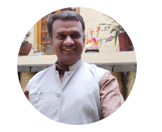

Preparing Experience…
Sound Healing · Career Counselling · Balavihar Education
Mahalakshmi Layout, Bangalore, India
The Journey
B.E. Mechanical Engineering (1994–98), MSRIT Bangalore. Corporate career spanning Bosch, TVS, Triveni, TD Power Systems — including 2 years at Robert Bosch GmbH, Stuttgart, Germany.
Fluent in English, Kannada, Telugu, Tamil & Hindi. A1 German. Certified in Samskrita Shiksha. B.Ed. (Math & Physics) with 8.5 CGPA — Aristotle College, Kolar, 2023.
Chinmaya Yuva Kendra Volunteer since 1993. Art of Living associate since 2001. Completed 8+ Advanced Meditation courses. NLP Practitioner under Dr Doris Greenwood, Germany.
Harish is a certified 2nd-Level Reiki practitioner and Sound Healing Therapist, also trained in Past Life Regression Therapy. Using vibrational resonance and ancient healing modalities, he helps individuals restore balance — mentally, physically, and spiritually.
As a certified Genetic Brain Profile Consultant (Neuro Psychologist) under MIDNA Bangalore, Harish uses Dermatoglyphics — a fingerprint-based neuroscience — to mentor children, adolescents, and adults toward their innate strengths and true potential.
Since 2001, Harish has been a dedicated Balavihar Sevak, nurturing children aged 5–16 in chanting the Bhagavad Gita, Vishnu Sahasranama, Hanuman Chalisa, Shlokas, Stotrams and value-based lessons rooted in India's sacred scriptures.
⚠️ Video requires an HTTP server. Please open via start_server.bat or use VS Code Live Server.
Credentials
Met Pujya Gurudev Swami Chinmayananda ji. Lifelong association begins.
MSRIT Bangalore. Corporate career at Bosch, TVS, Triveni & international role in Stuttgart, Germany.
Began weekend Balavihar classes. Art of Living volunteer with 8+ Advance courses.
Transitioned seamlessly to online format during COVID. Offline classes resumed since.
Aristotle College, Kolar – Bangalore North University. Math & Physics.
Dr Doris Greenwood, Germany. Prasanna Counselling Centre, Bangalore.
Certified Neuro Psychologist. Dermatoglyphics-based mentoring for all age groups.

Let's Connect
Whether you're seeking healing, career clarity, or education rooted in timeless values — Harish is here to guide you.